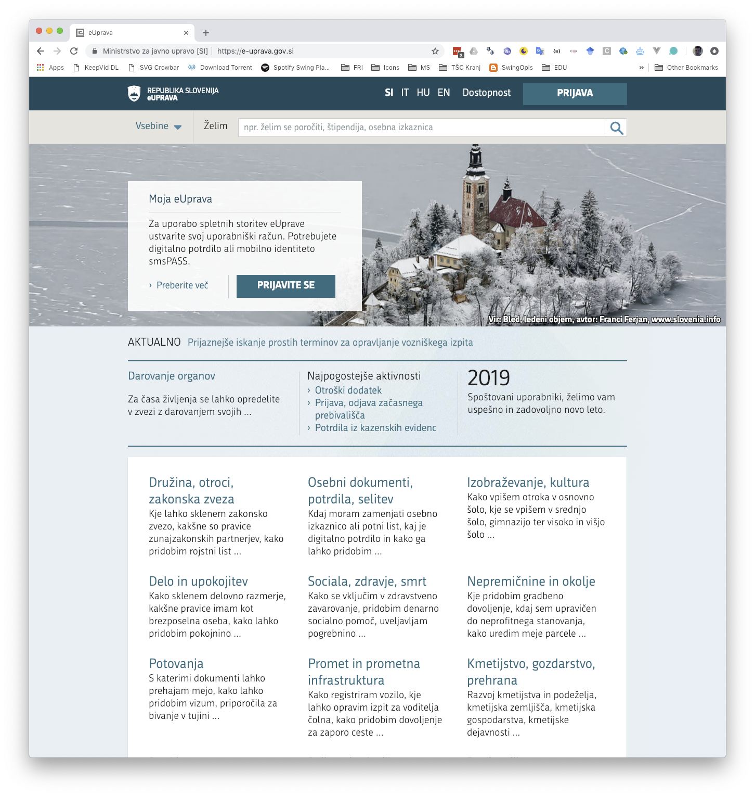
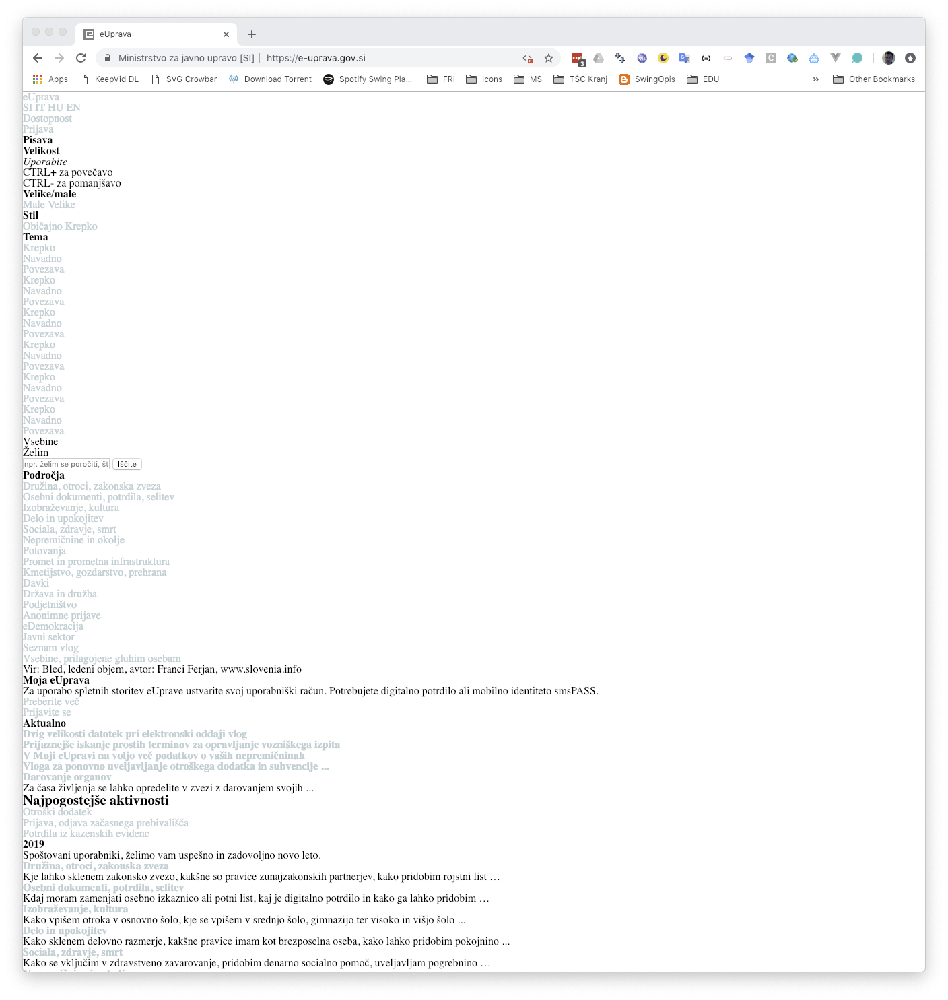
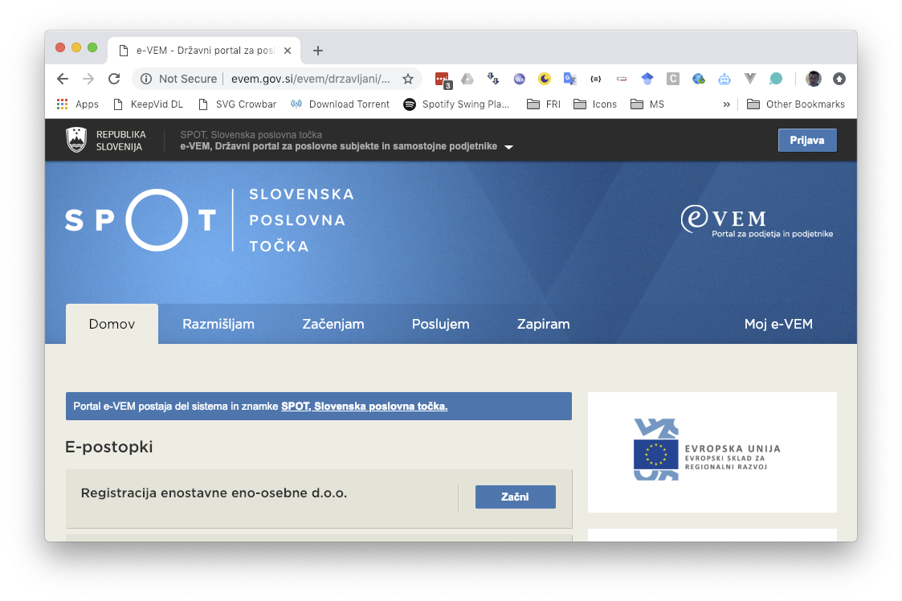
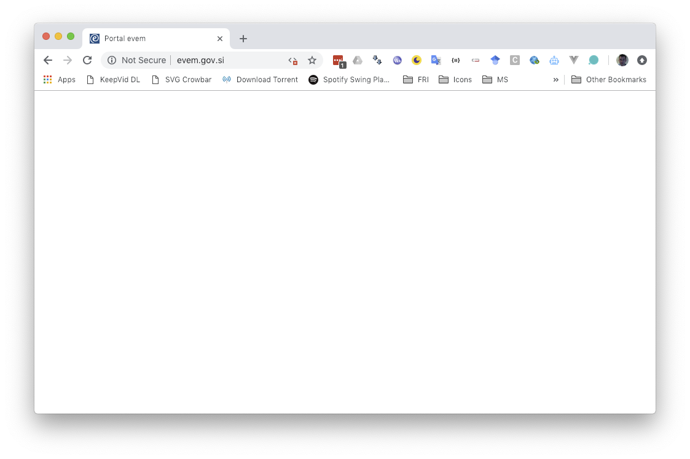
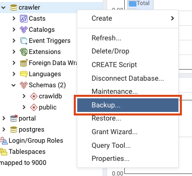
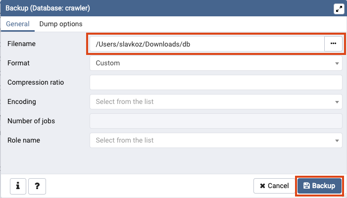

Chapter 1 Programming assignment 1

1.1 Introduction
The goal of this programming assignment is to build a standalone crawler that will crawl only .gov.si web sites. The crawler will roughly consist of the following components (Figure 1.1):
- HTTP downloader and renderer: To retrieve and render a web page.
- Data extractor: Minimal functionalities to extract images and hyperlinks.
- Duplicate detector: To detect already parsed pages.
- URL frontier: A list of URLs waiting to be parsed.
- Datastore: To store the data and additional metadata used by the crawler.
Figure 1.1: Web crawler architecture.
1.2 Instructions
Implement a web crawler that will crawl only *.gov.si web sites. You can choose a programming language of your choice. The initial seed URLs should be:
- gov.si,
- evem.gov.si,
- e-uprava.gov.si and
- e-prostor.gov.si.
For the above given domains only (not other domains), Apache Nutch needs the following time:
- HTTP retrieval without rendering:
- cca. 60min
- Retrieved around 7.000 pages at the level 14.
- HTTP retrieval with rendering (Selenium - HTMLUnit):
- cca. 230min - 290min
- Retrieved around 3.000 pages.
All the parameters are set to default settings (5s between requests to the same server, …). Selenium/HTMLUnit protocol retrieves significantly less web pages due to problems in parsing evem.gov.si and e-uprava.gov.si web sites.
The crawler needs to be implemented with multiple workers that retrieve different web pages in parallel. The number of workers should be a parameter when starting the crawler. The frontier strategy needs to follow the breadth-first strategy. In the report explain how is your strategy implemented.
Check and respect the robots.txt file for each domain if it exists. Correctly respect the commands User-agent, Allow, Disallow, Crawl-delay and Sitemap. Make sure to respect robots.txt as sites that define special crawling rules often contain spider traps. Also make sure that you follow ethics and do not send request to the same server more often than one request in 5 seconds (not only domain but also IP!).
In a database store canonicalized URLs only!
During crawling you need to detect duplicate web pages. The easiest solution is to check whether a web page with the same page content was already parsed (hint: you can extend the database with a hash, otherwise you need compare exact HTML code). If your crawler gets a URL from a frontier that has already been parsed, this is not treated as a duplicate. In such cases there is no need to re-crawl the page, just add a record into to the table link accordingly.
- BONUS POINTS (10 points): Deduplication using exact match is not efficient as some minor content can be different but two web pages can still be the same. Implement one of the Locality-sensitive hashing methods to find collisions and then apply Jaccard distance (e.g. using unigrams) to detect a possible duplicate. Also, select parameters for this method. Document your implementation and include an example of duplicate detection in the report. Note, you need to implement the method yourself to get bonus points.
When your crawler fetches and renders a web page, do some simple parsing to detect images and next links.
- When parsing links, include links from href attributes and onclick Javascript events (e.g. location.href or document.location). Be careful to correctly extend the relative URLs before adding them to the frontier.
- Detect images on a web page only based on img tag, where the src attribute points to an image URL.
Donwload HTML content only. List all other content (.pdf, .doc, .docx, .ppt and .pptx) in the page_data table - there is no need to populate data field (i.e. binary content). In case you put a link into a frontier and identify content as a binary source, you can just set its page_type to BINARY. The same holds for the image data.
In your crawler implementation you can use libraries that implement headless browsers but not libraries that already implement web crawler functionality. Therefore, some useful libraries that you can use are:
On the other hand, you MUST NOT use libraries like the following:
To make sure that you correctly gather all the needed content placed into the DOM by Javascript, you should use headless browsers. Googlebot implements this as a two-step process or expects to retrieve dynamically built web page from an HTTP server. A nice session on crawling modern web sites built using JS frameworks, link parsing and image indexing was a part of Google IO 2018 and it is suggested for you to check it:
Examples of enabling javascript in a web browser or not:
|
|
|
|  |  |
|  |  |
In your implementation you must set the User-Agent field of your bot to fri-wier-NAME_OF_YOUR_GROUP.
1.2.1 Crawldb design
Below there is a model of a crawldb database that your crawler needs to use. This is just a base model, which you MUST NOT change, but you can extend it with additional fields, tables, … that your crawler might need. You should use PostgreSQL database and create a schema using a prepared SQL script.
Table site contains web site specific data. Each site can contain multiple web pages - table page. Populate all the fields accordingly when parsing. If a page is of type HTML, its content should be stored as a value within html_content attribute, otherwise (if crawler detects a binary file - e.g. .doc), html_content is set to NULL and a record in the page_data table is created. Available page type codes are HTML, BINARY, DUPLICATE and FRONTIER. The duplicate page should not have set the html_content value and should be linked to a duplicate version of a page.
You can optionally use table page also as a current frontier queue storage.
1.3 Basic tools
We propose to run the notebook using an Anaconda environment. Prepare the environment as follows:
# Create and activate environment (activate it before each use)
conda create -n wier python=3.9
conda activate wier
# Install dependencies
conda install selenium psycopg2 nb_conda requests
conda install -c anaconda flask pyopenssl
conda install -c conda-forge flask-httpauth
# Run Jupyter notebook
jupyter notebook During the lab session we will present basic tools for those who are not well experienced in Web scraping and database access:
- Jupyter notebook tutorial Web crawling - basic tools that introduces the basic tools to start working on the assignment.
- A showcase of server (Remote crawler database (server)) and client (Remote crawler database (client)) implementation in case you would like to run multiple crawlers (e.g. from each group member homes) and have the same crawler database.
1.4 What to include in the report
The report should follow the standard structure. It must not exceed 2 pages.
In the report include the following:
- All the specifics and decisions you make based on the instructions above and describe the implementation of your crawler.
- Document also parameters that are needed for your crawler, specifics, problems that you had during the development and solutions.
- For the sites that are given in the instructions’ seed list and also for the whole crawldb together (for both separately) report general statistics of crawldb (number of sites, number of web pages, number of duplicates, number of binary documents by type, number of images, average number of images per web page, …).
- Visualize links and include images into the report. If the network is too big, take only a portion of it or high-level representation (e.g. interconnectedness of specific domains). Use visualization libraries such as D3js, visjs, sigmajs or gephi.
1.5 What to submit
Only one of the group members should make a submission of the assignment in moodle. The submission should contain only a link to the repository that contains the following which you will use for all the submissions during the course:
- a file pa1/db
- a file pa1/report.pdf - PDF report.
- a file pa1/README.md - Short description of the project and instructions to install, set up and run the crawler.
- a folder pa1/crawler - Implementation of the crawler.
NOTE: The database dump you submit should not contain images or binary data. Filename db should be of Custom export format that you can export directly using pgAdmin:
  The exported data file should not be larger than 100MB.
For this assignment it is enough to retrieve data from up 50.000 web pages in total (number of records in table page of type HTML from .gov.si domains).